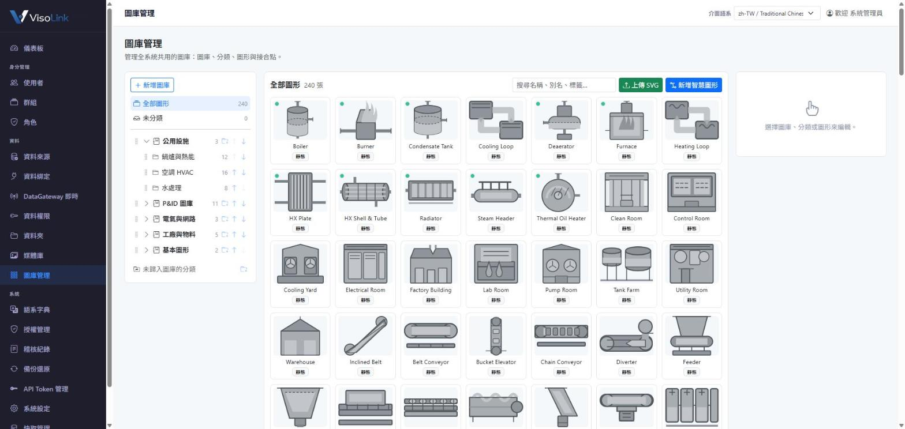
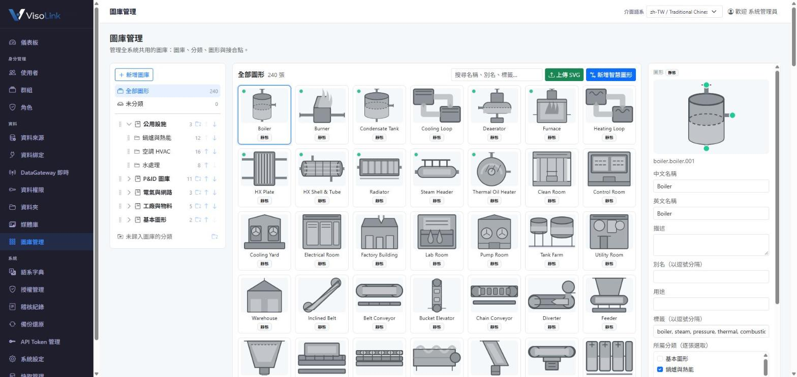

圖庫管理
管理全系統共用的圖庫：圖庫、分類、圖形與接合點。圖庫由伺服器統一提供，所有使用者在 Studio 看到同一份。
瀏覽圖庫總覽

| 圖形種類 | 說明 |
|---|---|
| 靜態 | 一般 SVG 圖形，放到畫布後等比例縮放。 |
| 可拉伸 | 例如直管，可沿方向拉長而不變形。 |
| 智慧 | 由節點、線段與零件組成，拖曳黃色控制點即可改變形狀（彎管、三通、PID 管道等），端點會接上設備的接合點。 |
- 點選左側「圖庫管理」。
- 在左側點「全部圖形」、「未分類」或某個分類。
- 用上方搜尋框輸入名稱、別名或標籤。
- 點圖形，在右側面板查看與編輯。
管理圖庫與分類
- 點「新增圖庫」建立新的圖庫；圖庫下可新增分類。
- 拖曳左側項目調整順序，或用上移／下移箭頭。
- 在分類中點「加入圖形」挑選已有的圖形；同一張圖形可屬於多個分類。
- 需要整個分類一起出現時，用「引用分類」：之後加入該分類的圖形會自動出現在這裡。
- 不再需要時刪除：刪除圖庫時裡面的分類會保留，移到「未歸入圖庫的分類」；刪除分類時圖形仍保留在圖庫中。
刪除圖形會從所有分類移除，已使用它的畫面會顯示空圖。
編輯圖形資訊與接合點

- 在清單點選圖形。
- 修改中文名稱、英文名稱、描述、別名、用途與標籤（以逗號分隔），讓 Studio 搜尋得到。
- 在「所屬分類」逐一勾選分類。
- 點「編輯接合點」：在圖片上點一下新增接合點，拖曳移動，按 Delete 刪除；位置吸附到 1 單位，按住 Alt 可自由放置。
- 修改會自動儲存，畫面顯示「已儲存」。
接合點是管線等智慧圖形自動接上設備管口的位置；Editor 移動圖片時也會貼合其他物件的管口與邊緣。
上傳 SVG
- 點「上傳 SVG」。
- 選擇 SVG 檔案與要放入的分類。
- 確認格式檢查與安全檢查結果：檔案不可超過 1 MB，需有 viewBox（或寬高）；指令碼、事件屬性、嵌入 HTML 與外部連結會被列出並自動移除。
- 點「加入圖形」。
新圖形出現在指定分類，Studio 圖庫可搜尋到。
製作智慧圖形
智慧圖形由「參數、節點、線段、零件、控制點、接合點」組成，使用者在 Studio 拖曳控制點即可改變形狀。
- 點「新增智慧圖形」，填寫名稱。
- 「參數」：新增參數並設定預設值、單位、最小值與最大值。
- 「節點與線段」：從起點畫線段，設定角度（0＝向右、90＝向下）與長度（固定值或參數）。
- 「零件」：加入或上傳零件，設定沿線段拉長或固定在節點；清單越下面的零件畫在越上層。
- 「控制點」與「接合點」：在節點或線段上新增，指定拖曳時調整哪個參數。
- 在預覽拖曳黃色控制點試用，確認後點「儲存」。
至少要加入一個零件才能儲存。智慧圖形在 Studio 可設定單色或漸層顏色，多選後可一次換色。